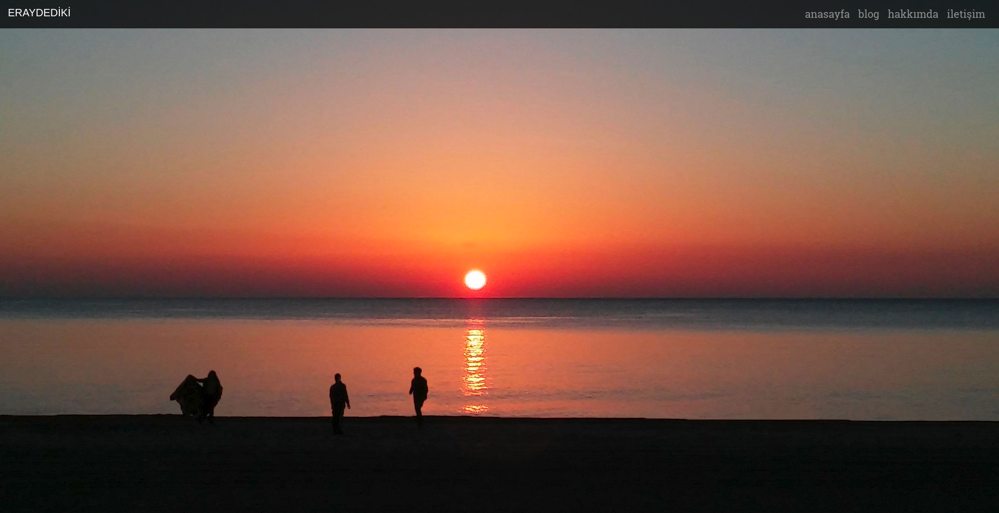
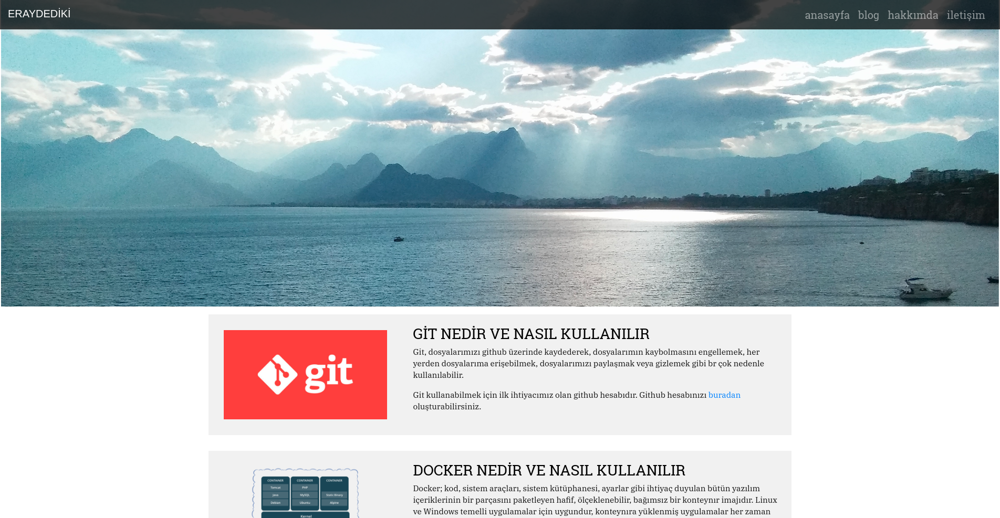
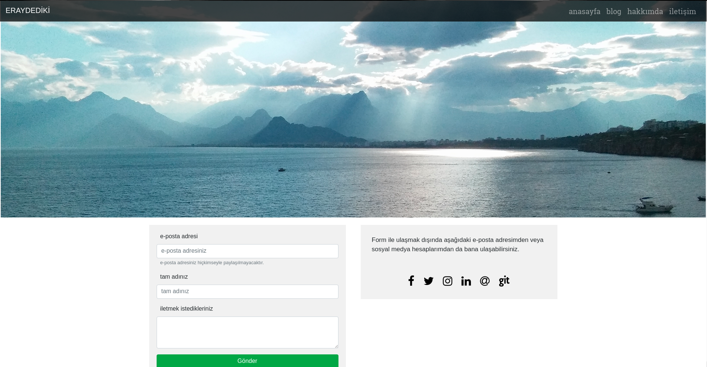
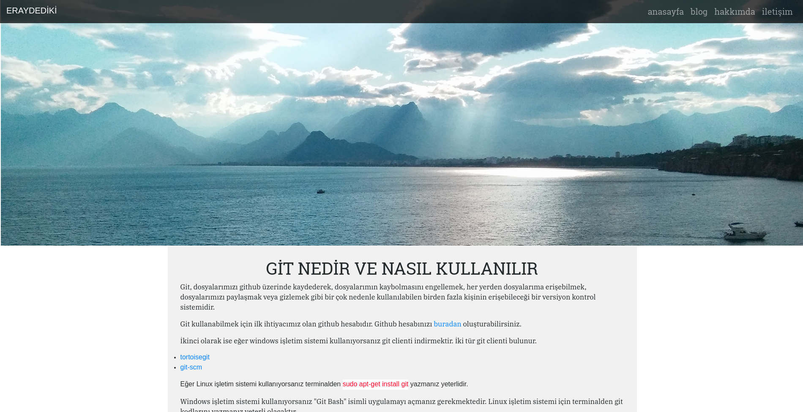
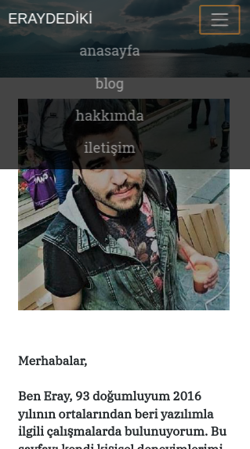

Merhabalar bu yazıyı okuyan herkese.
Öncelikle "bu siteyi neden yaptım?" ondan bahsetmek istiyorum.
Bu siteyi yapma sebebim öncelikle bildiğim şeyleri paylaşmak ve bu bilgilere istediğim her yerden erişebilmek. Bildiğim şeyleri de başka insanlara aktarmayı seven birisi olduğum için bu siteyi yapma ihtiyacı hissettim. Siteyi yapmam biraz uzun sürdü. Yapmaya başladım kendi blog sitemi yapmak istiyordum ama sonrasında yoğun iş tempoları derken son işimden ayrıldıktan sonra hazır işim gücüm yokken sitemi tamamlayayım diye düşündüm.
Siteyi oluştururken Bildiğim her şeyi kullanabilmek istiyordum ama bu pek mümkün olmadı. Siteyi yapmak ve yayına almak için 63 dolarlık bir domain ve hosting ücreti ödeyecektim ve bu 63 dolar siteyi yapmaya başladığımda 235 liraya denkken şu anda (yani ben bu yazıyı yazarken) 270 lirayı ulaşmıştı bile.
Siteyi yapmaya başladığımda sadece HTML, CSS, JQuery, Javascript, çat pat da Angular Js biliyordum. Tek bir sayfa oluşturup içine her şeyi koymak istedim ama sitenin performansı ve yüklenme hızı benim için çok önemliydi. Çok yavaş veri transfer hızlarında bile hızlı bir şekilde yüklensin istiyordum. Bu yüzden sayfaları ayırmayı ve backend yazmayı düşündüm. Hem hızlı bir sayfa elde edecektim hem de yeni bir şey öğrenmiş olacaktım.
Sayfaların front-end kısmını yaptım back-end kısmına gelince büyük bir sorun olacaktı benim için. Back-end yazmam gerekmediği de söylendi bana defalarca ama bir yol ayrımına düştüm. Back-end yazmam gerkiyordu çünkü url çubuğunda /blog.html, /index.html vs yazsın istemiyordum ve çalışması gereken de bir form vardı sayfamda. En önemlisi de ben bu siteyi sürekli geliştirmek yeni şeyler eklemek istiyordum. Üyelik sistemim olsun insanlar yorum girebilsinler istiyordum.
Back-end yazarken de hangi dili kullanmamın daha uygun olacağını bilmiyordum. PHP biliyordum ama sadece kodu okuyup ne iş yaptığını anlayacak düzeyde bilgim vardı. Bir yerlerden kopyala yapıştır usulü ile yapmak da istemiyordum kendim yazmak istiyordum ve sıfırdan PHP eğitimi almam gerekiyordu. Temel seviyede python bilgim olduğu için de back-endini python ile yazsam daha iyi olacağını düşündüm ama ne olursa olsun yeni bir dile hakim olmak beni en çok zorlayan şeylerden birisiydi ve bunun için de geniş bir zamana ihtiyacım vardı.
En son bir arkadaşımın bana Node.js önermesi ile birlikte back-end kısmını Node.js ile yazma kararı aldım. Çünkü yeni bir programlama dili öğrenmeme gerek kalmamıştı. javascript frameworkü üzerinden bütün backend işlerimi halledebilecektim ve NOde.js öğrenmeye başladım. Okuduğum kaynaklar, izlediğim videolar sonucunda Node.js öğrendim ve aynı zamanda da öğrendiğim şeyleri siteye uygulamaya başladım.
Back-end bittikten sonra içerik ekleme işlemine geçtim. Kendim için önemli olduğunu düşündüğüm ve sektörde işe yarayacak içerikleri eklemeye başladım. İçerik ekleme işlemi için bir veri tabanı oluşturma kararı aldım mongoDB'yi kullanacaktım bunun için. Node.js ile veri tabanına veri gönderecektim react js ile de veri tabanından çekip blog sayfalarımda bunları gösterecektim. Sonra mongoDB ve react öğrenmeye başladım. Sitemin mobil uygulamasını da yapmak istiyordum ve bunun için de web viewer kullanacaktım. Ama react öğrenmeye başladıktan sonra işleyişi değiştirdim ve react native ile mobil uygulama yazmaya başlayacağım.
Bütün bunları yapmaya başlarken yukarıda da bahsettiğim gibi dolar her geçen gün yükselmeye devam ediyordu ve süreç zaten gereğinden fazla uzamıştı. Bu yüzden de idare edecek, basit ama profesyonelliği de heba etmeyecek bir yöntem ile devam edip yapmak istediğim çoğu şeyi ilerleyen zamana bırakma kararı aldım. Bu yüzden herhangi bir veri tabanı oluşturmadım. Veri tabanı olmadığı için de react kullanma ihtiyacı hissetmedim. Veri tabanımı oluşturduktan sonra üyelik sistemi, yorum sistemi vb. özellikleri de eklemeye devam edeceğim.
Peki Sosyal Hizmetler mezunu ve İktisat son sınıf terk birisi olarak bütün bunları neden mi yapıyorum?
Çünkü bir insanın bir işi yapabilmesi için o işle ilgili bir bölümden mezun olması gerektiğini düşünmüyorum. Bir insanın bir işi yapabilmesi için o işi sevmesi gerektiğini ve o iş üzerinde kendisini kendi başına bile geliştirebiliceğine inanıyorum.
Bu siteyi yaparken kullandığım teknolojiler ise: